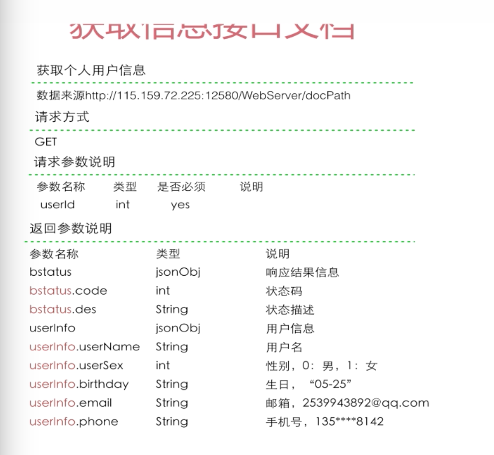
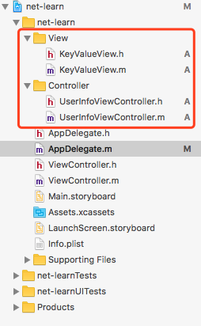
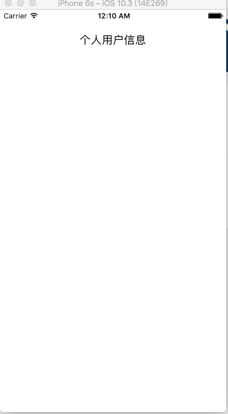

网络解析
与网络请求有关的类
NSURL: 客户端访问哪台服务器的制定资源NSURLRequest: 客户端发起的网络请求内容: 客户端服务器建立的网络连接NSURLResponse: 服务端给予客户端的响应结果
发起第一个网络请求
1 | - (BOOL)application:(UIApplication *)application didFinishLaunchingWithOptions:(NSDictionary *)launchOptions { |
键入以上代码后按cmd+r运行一下，此时控制台并没有输出我们想要的结果，而是输出了1
App Transport Security has blocked a cleartext HTTP (http://) resource load since it is insecure. Temporary exceptions can be configured via your app's Info.plist file.
提示我们已经阻止了明文http请求，因为他是不安全的，可以通过Info.plist配置解除请求。
在项目根目录里打开Info.plist， 添加 App Transport Security Settings 并在App Transport Security Settings下添加Allow Arbitrary Loads值为YES。 然后重新运行就好了
然后重新运行就好了
使用Get方式发送请求
搭建用户信息界面
api接口已经返回的参数格式结构

新建项目
新建cocoa Class=>UserInfoViewController继承UIViewController
新建cocoa Class=>KeyValueView继承UIView
如图

先在KeyValueView.h 声明所需的变量已经方法1
2
3
4
5
6
7
8@interface KeyValueView : UIView
@property (nonatomic, strong) UILabel *keyLabel;
@property (nonatomic, strong) UILabel *valueLabel;
- (void) setupKey: (NSString *)key value:(NSString *)value;
@end
并在KeyValueView.m实现1
2
3
4
5
6
7
8
9
10
11
12
13
14
15
16
17
18
19
20
21
22
23
24
25
26
27
28
29
30
31
32
33
34
35
36
37
38
39
40
41
42
43
44
45
46
47
@implementation KeyValueView
-(id) initWithFrame:(CGRect)frame
{
self = [super initWithFrame:frame];
if (self) {
// 添加keyLabel
// 如果存在父级，则创建一个 UILabel x:0, y:0, 宽：父级宽度1/3, 高: 父级高度
_keyLabel = [[UILabel alloc] initWithFrame: CGRectMake(0, 0, CGRectGetWidth(self.frame) /3, CGRectGetHeight(self.frame))];
// 设置背景色为透明
_keyLabel.backgroundColor = [UIColor clearColor];
// 文字居左对齐
_keyLabel.textAlignment = NSTextAlignmentLeft;
// 设置字体大小
_keyLabel.font = [UIFont systemFontOfSize: 16];
// 设置字体颜色
_keyLabel.textColor = [UIColor blackColor];
// 添加到父级
[self addSubview: _keyLabel];
// 添加valueLabel
// 如果存在父级，则创建一个 UILabel x:0, y:0, 宽：父级宽度1/3, 高: 父级高度
_valueLabel = [[UILabel alloc] initWithFrame: CGRectMake(CGRectGetWidth(self.frame) /3, 0, CGRectGetWidth(self.frame) * 2 /3, CGRectGetHeight(self.frame))];
// 设置背景色为透明
_valueLabel.backgroundColor = [UIColor clearColor];
// 文字居左对齐
_valueLabel.textAlignment = NSTextAlignmentLeft;
// 设置字体大小
_valueLabel.font = [UIFont systemFontOfSize: 16];
// 设置字体颜色
_valueLabel.textColor = [UIColor blackColor];
// 添加到父级
[self addSubview: _valueLabel];
}
return self;
}
-(void)setupKey:(NSString *)key value:(NSString *)value
{
// 给keyLabel && valueLabel 赋值的方法
[_keyLabel setText:key];
[_valueLabel setText:value];
}
接着我们要在UserInfoViewController去调用keyValueView的UIView类1
2
3
4
5
6
7
8
9
10
11
12
13
14
// 引入keyvalue
@interface UserInfoViewController : UIViewController
// 把所有个人信息录到这里 ( 声明 )
@property (nonatomic, strong) KeyValueView *userNameView; // 用户名信息
@property (nonatomic, strong) KeyValueView *userSexView; // 用户性别
@property (nonatomic, strong) KeyValueView *birthdayView; // 生日
@property (nonatomic, strong) KeyValueView *emailView; // email
@property (nonatomic, strong) KeyValueView *phoneView; // 手机号
@end
1 |
|
view && controller都写好之后，我们去修改一下AppDelegate，因为默认主view为项目根目录的ViewControll，所以如果我们没有把view设置为我们的UserInfoViewController 运行是没有任何效果的。
1 | - (BOOL)application:(UIApplication *)application didFinishLaunchingWithOptions:(NSDictionary *)launchOptions { |
修改完成后再次运行看效果。此时只出现了标题。

这时候我们可以打开调试看一下为什么我们只出现标题，没有出现KeyValueView呢
依次打开xCode菜单Debug=>View Debugging=>Show View Frames这时候可以看到我们的labelView其实是有被加到view中，只是没有数据展示 所以看不出来，接下来我们正式开始发起网络请求数据填充view